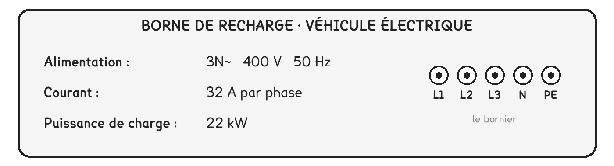
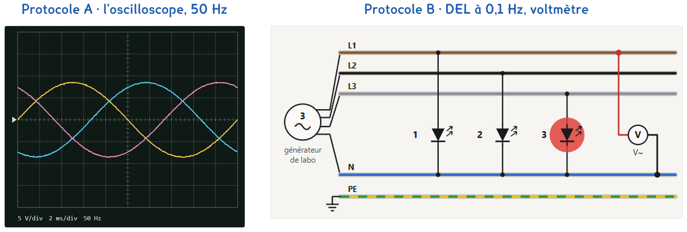
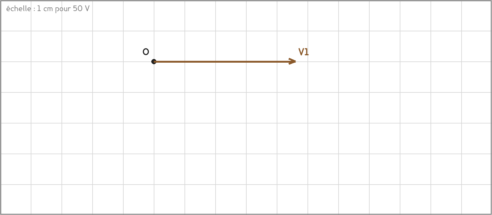

Tle Bac Pro · MELEC, CIEL · TP sur simulation SIM-08
Comment trois tensions de 230 V donnent-elles 400 V entre deux phases ?
3 figures
Sujet. Dans le garage d’une maison, la borne de recharge de la voiture électrique est raccordée en triphasé : sa plaque indique 400 V. Pourtant, entre chaque phase et le neutre, il n’y a que 230 V, comme sur une prise ordinaire.
Problématique : comment trois tensions de 230 V donnent-elles 400 V entre deux phases ?
La simulation. Ouvrir « Le réseau triphasé » : le fichier triphase.html, sur l’ENT ou la clé du professeur.
Voici la plaque de la borne de recharge.

a) Relever la tension et la fréquence. Que veut dire « 3N~ » ?
Tension : ……………………… · fréquence : ………………………
« 3N~ » : ……………………………………………………………………………………
b) Dans la simulation, protocole B, relever la couleur des conducteurs.
Le bornier de la plaque porte les mêmes noms.
| Le conducteur | L1 | L2 | L3 | N | PE |
|---|---|---|---|---|---|
| Sa couleur | ……………… | ……………… | ……………… | ……………… | ……………… |
Dans la simulation, aucun récepteur n’est branché sur le conducteur PE.
c) Entourer le rôle du conducteur vert-jaune.
transporter l’énergie · protéger les personnes, avec le disjoncteur différentiel
d) Compléter le tableau. Le premier calcul est fait.
| La fréquence | 50 Hz | 0,1 Hz |
|---|---|---|
| La période T = 1 ÷ f | 0,02 s = 20 ms | ……………………… |
| Un tiers de période | ……………………… | ……………………… |
Un tour complet vaut 360°, donc un tiers de tour vaut ……………… degrés.
Deux protocoles répondent à la même question. Une partie de la classe prend A, l’autre prend B, et on compare à la fin.

Capture de la simulation « Le réseau triphasé », générateur de labo.
Protocole A · l’oscilloscope. À 50 Hz, les trois tensions simples v1, v2 et v3, entre chaque phase et le neutre, s’affichent ensemble. On mesure leur période et leur décalage. La voie 4 montre une tension composée, entre deux phases.
Protocole B · DEL et voltmètre. Ralenti à 0,1 Hz, le générateur de labo fait une période en 10 s : trois DEL, une par phase, s’allument l’une après l’autre, et on chronomètre. À 50 Hz, le voltmètre mesure V, entre une phase et le neutre, puis U, entre deux phases.
e) Compléter le tableau pour comparer les deux protocoles.
| Protocole A | Protocole B | |
|---|---|---|
| Le décalage se mesure avec | …………………………… | …………………………… |
| Les tensions se lisent en valeur | maximale · efficace | maximale · efficace |
| Une limite | …………………………… | …………………………… |
Le choix se fait maintenant, avant de toucher aux réglages.
f) Quel protocole prenez-vous ? Justifier en une phrase.
Je prends le protocole ……… parce que ……………………………………………………………………
g) Prévoir : que vaut la tension entre deux phases ?
Entourer une réponse.
| 0 V | 230 V | entre 230 V et 460 V | 230 + 230 = 460 V |
Avant de commencer. Ouvrir triphase.html. Source Générateur de labo · très basse tension, fréquence 50 Hz.
Le schéma d’abord, les mesures ensuite.
h) Schématiser les trois lampes, chacune entre phase et neutre.
Ajouter le voltmètre qui mesure la tension entre L1 et L2.
Le schéma se dessine sur la feuille du TP.
i) Compléter avec vos mesures et l’unité. Déphasage = Δt ÷ T × 360.
| Période T | Δt de v1 à v2 | Δt de v2 à v3 | Déphasage (°) |
|---|---|---|---|
| ……………………… | ……………………… | ……………………… | ……………………… |
Puis les tensions : le protocole A lit des valeurs maximales, le protocole B des valeurs efficaces.
j) Compléter, puis calculer le rapport U ÷ V.
| La source | V (V) | U (V) | U ÷ V |
|---|---|---|---|
| Générateur de labo | ……………… | ……………… | ……………… |
| Réseau du bâtiment | ……………… | ……………… | ……………… |
Comparer d’abord avec un groupe qui a pris l’autre protocole.
k) Le déphasage vaut-il 120° ? L’autre groupe est-il d’accord ?
Le programme donne la relation U = √3 × V.
l) Calculer √3 × 230 V. Qu’annonce alors la plaque de la borne ?
√3 × 230 V = ……………………… · la plaque annonce ………………………………………
Dans la simulation, protocole B, à 0,1 Hz : comparer Trois lampes et Trois DEL.
m) Par période, la lampe s’allume deux fois, la DEL une fois. Pourquoi ?
La simulation affiche le réseau à l’oscilloscope et au voltmètre. Au labo, jamais.
n) Pourquoi ne mesure-t-on pas le réseau au labo ? Que prend-on alors ?
o) Répondre à la problématique en deux ou trois phrases.
Ce que ce TP a établi, et qui vaut pour tout réseau triphasé :
À RETENIR
Une ligne triphasée porte trois phases, L1 marron, L2 noir, L3 gris, le neutre N bleu et le conducteur de protection PE vert-jaune. Le PE ne transporte pas l’énergie. Il permet au disjoncteur différentiel de protéger les personnes.
Les trois tensions simples v1, v2 et v3, entre chaque phase et le neutre, ont la même valeur efficace V, 230 V sur le réseau. Elles sont décalées d’un tiers de période, soit 120°.
La tension composée U, entre deux phases, vaut U = √3 × V, soit 400 V pour 230 V.
Dans l’encadré 6 de la simulation, chaque tension est un vecteur qui tourne. V1 est tracé ci-dessous, à l’échelle 1 cm pour 50 V. Tracer V2, de même longueur, tournée de 120° dans le sens des aiguilles d’une montre. Tracer U12, du bout de V2 au bout de V1, et le mesurer.

U12 mesure ……………… cm, soit ……………… V.
TP sur simulation de physique-chimie. Le travail se fait sur la feuille du TP : cette page en est la version à l'écran, sans les lignes à remplir. Rien n'est enregistré.